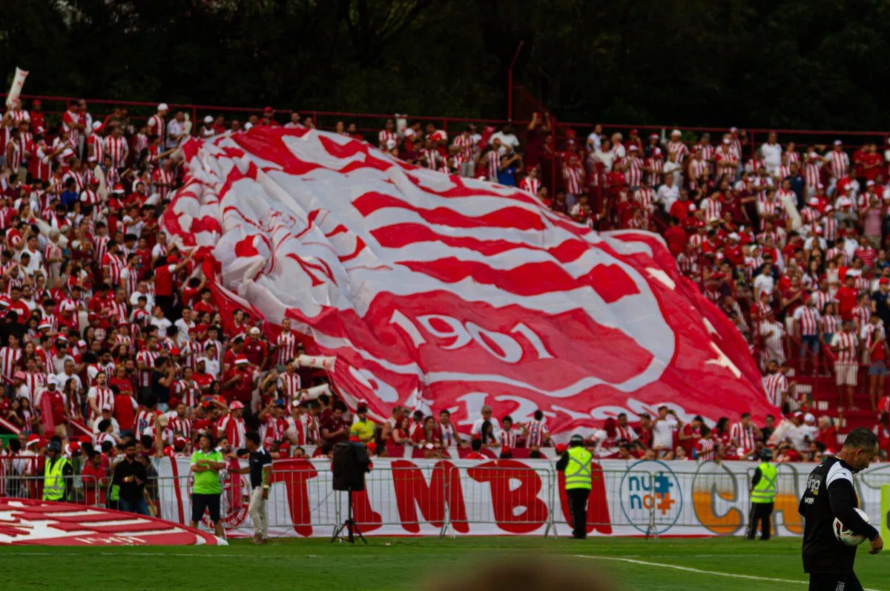
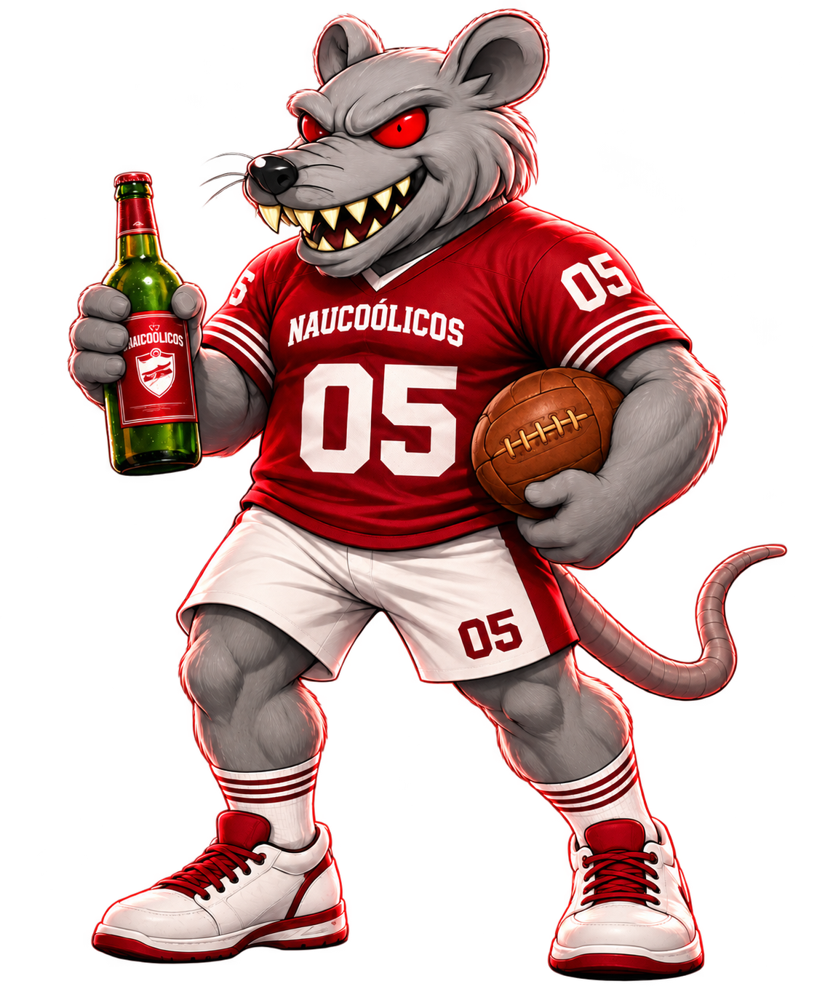
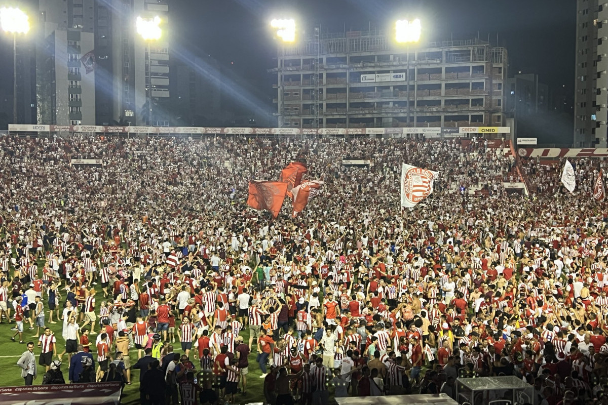
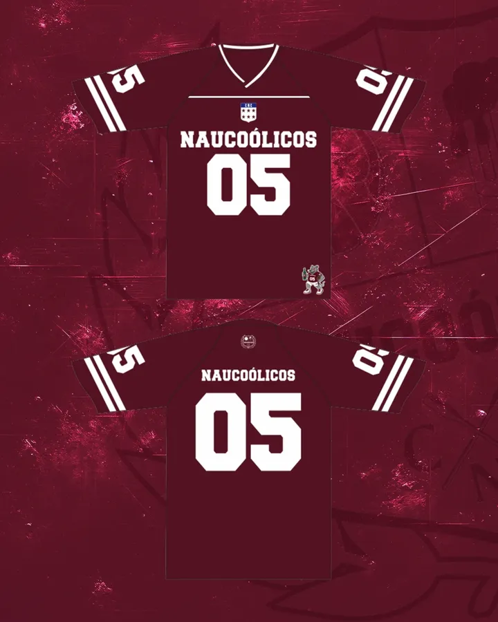
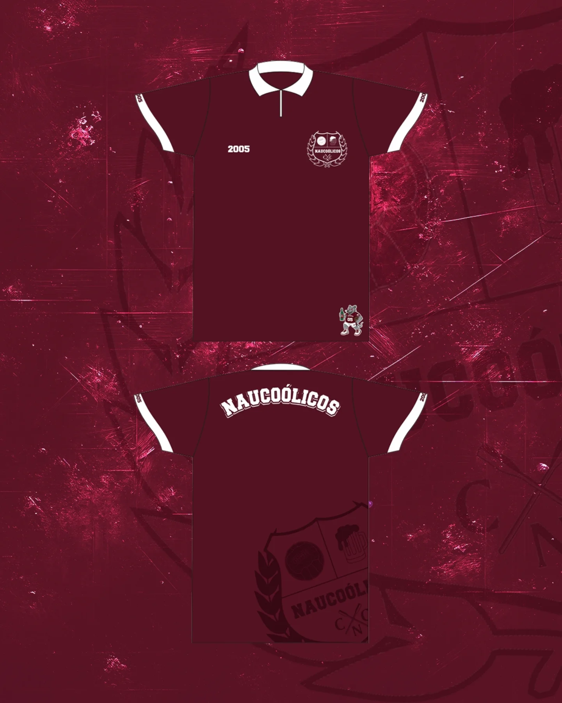
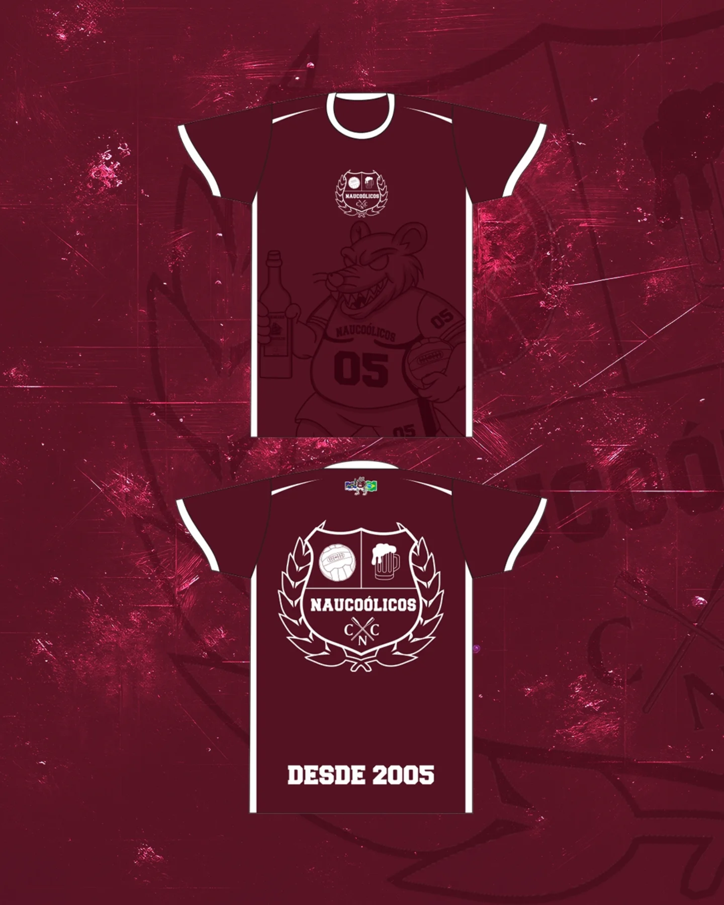
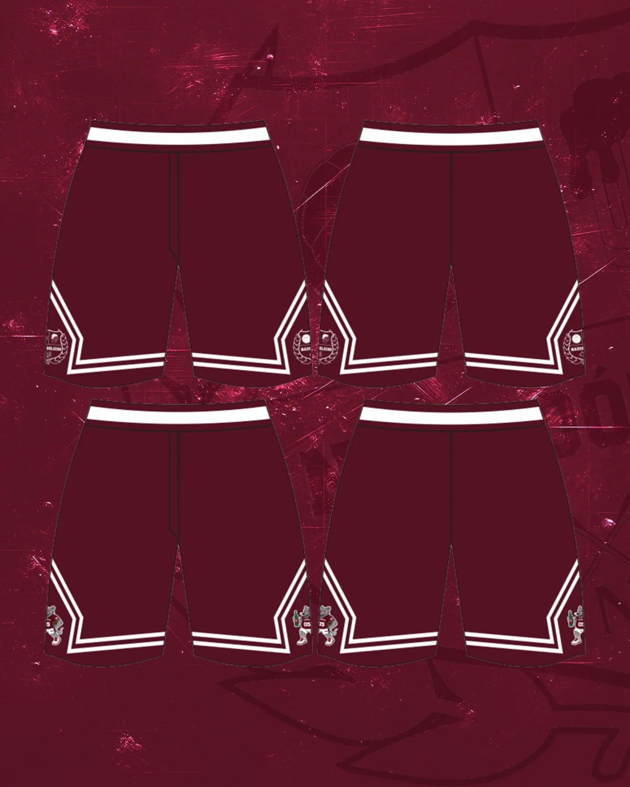
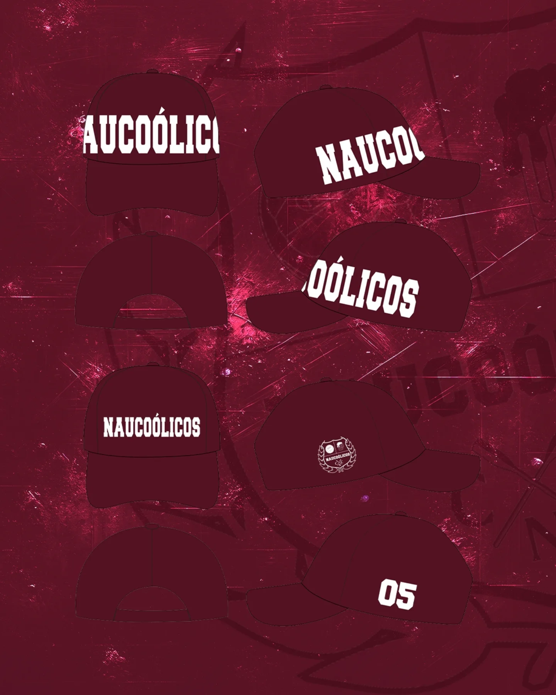
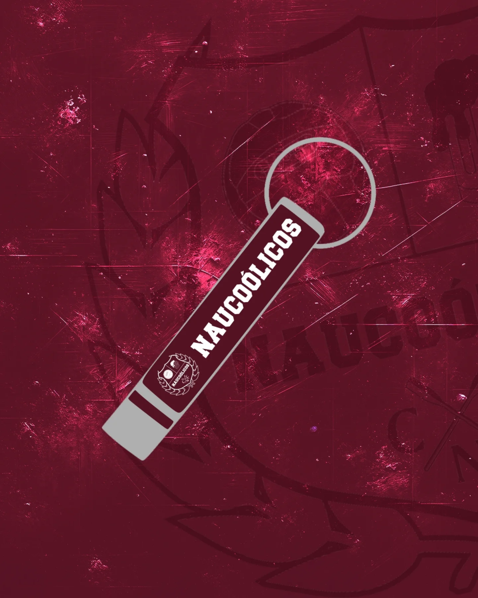
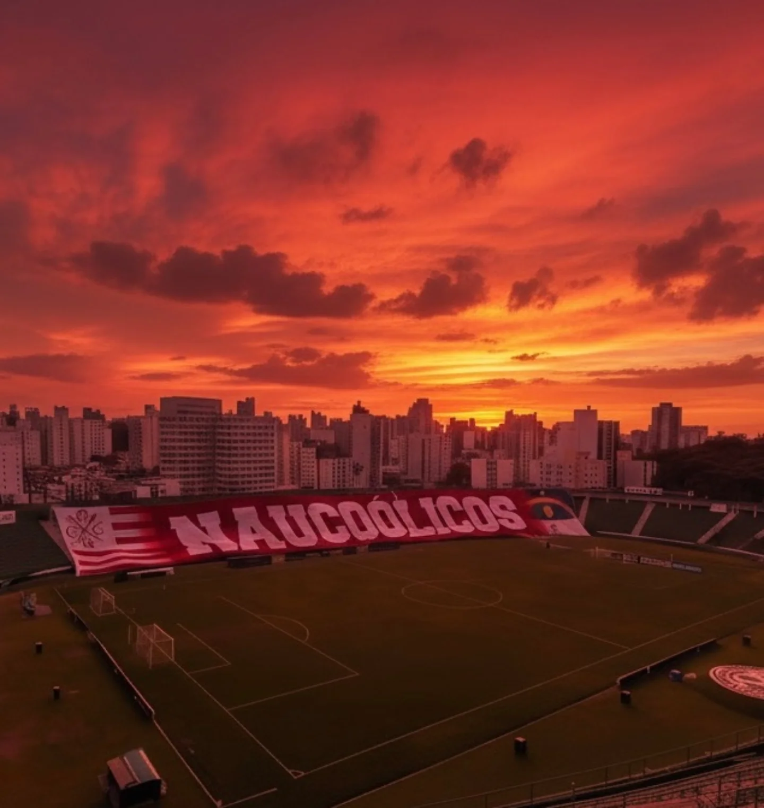

Seu lugar na arquibancada
Para quem quer estar perto da torcida, dos jogos e dos encontros.
Benefícios em definiçãoValor a confirmar

Torcida do Náutico
Paixão, arquibancada, identidade e tradição em vermelho e branco.

Raízes que nos unem
Os Naucoólicos surgiram em 2005, entre torcedores com raízes na Fanáutico que queriam continuar juntos na arquibancada em uma nova fase da vida. O trabalho e a família mudaram a rotina, mas não a vontade de acompanhar o Timbu, encontrar os amigos e brindar a cada jogo.
Da velha guarda à nova geração, seguimos escrevendo essa história nos Aflitos e levando nossa união também para o digital. A forma de torcer ficou mais tranquila; a paixão pelo Náutico continua inteira.
Faça parteApresentação da logo
A nossa logo é um símbolo do nosso orgulho e paixão pelo Clube Náutico Capibaribe. Estamos orgulhosos de representar nossa torcida e de mostrar nosso amor pelo clube.

Estádio Eládio de Barros Carvalho
Fotos da torcida. Toque para ampliar.
Brasileirão Série B
A torcida segue junto
Estamos desenhando formas de participação para quem vive o Náutico com a gente. Estes planos mostram a ideia inicial; valores e benefícios ainda serão definidos pela torcida.
Para quem quer estar perto da torcida, dos jogos e dos encontros.
Uma proposta para viver a torcida em família e seguir essa história juntos.
Apresentação dos planos: não há cadastro ou pagamento ativo nesta versão.
Coleção em construção
Prévia das peças pensadas para a coleção Naucoólicos. Preços e disponibilidade em breve.






A torcida em movimento
Jogos, encontros, caravanas e ações dos Naucoólicos terão espaço aqui. As primeiras notícias serão publicadas quando o conteúdo da torcida estiver pronto.

O espaço para combinar os dias de jogo e reunir a torcida.
Notícias da velha guarda, da nova geração e do que fazemos juntos.
Arquibancada aberta
Enquanto preparamos um canal direto de contato, acompanhe as novidades e os encontros da torcida pelo Instagram oficial.
Acompanhe no InstagramEstamos preparando uma forma simples de receber seu nome e interesse. Assim que o canal estiver pronto, avisaremos por aqui.